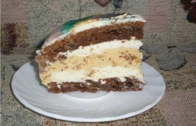
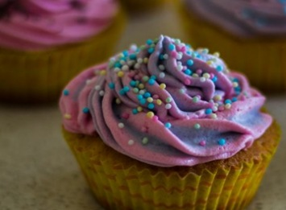
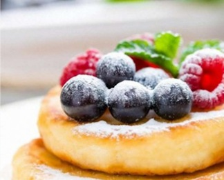
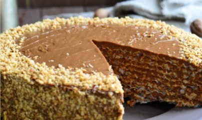
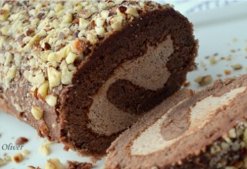
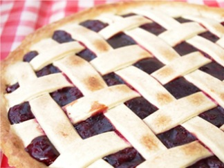

Торт
Сметанковий
Ніжні коржі та легкий сметанний крем.
Домашня кондитерська
Добірка солодких рецептів для затишних моментів
Кулінарна книга
Перевірені рецепти
для гарного настрою

Ніжні коржі та легкий сметанний крем.

Повітряне тісто та ніжна кремова шапочка.

Золотиста скоринка, ягоди та трішки пудри.

Насичений шоколадний смак і горіхова крихта.

Шоколадний бісквіт із ніжною начинкою.

Рум’яне тісто та соковита ягідна начинка.